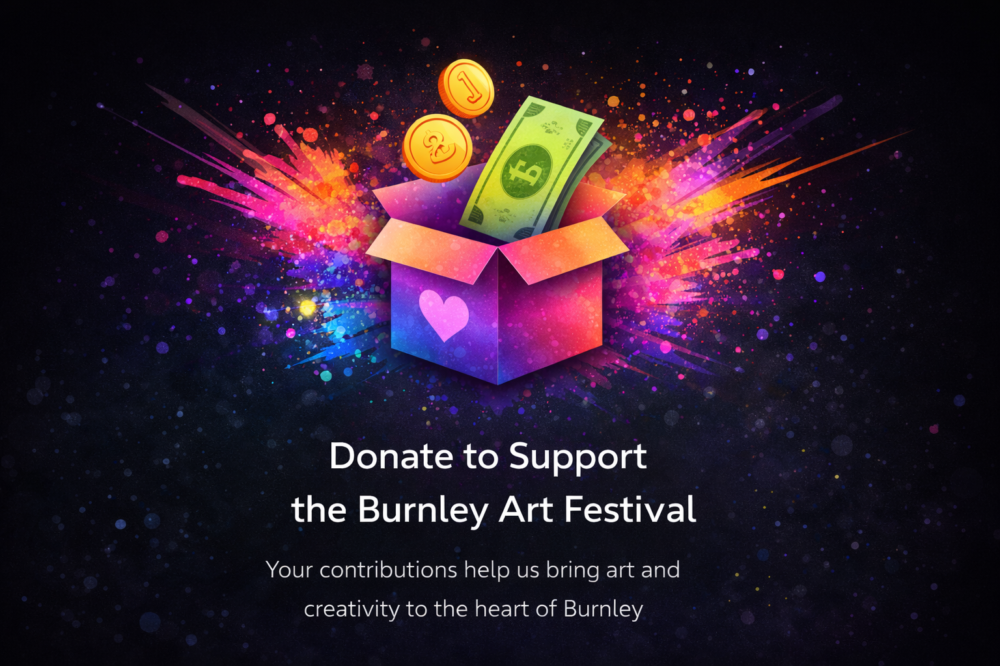
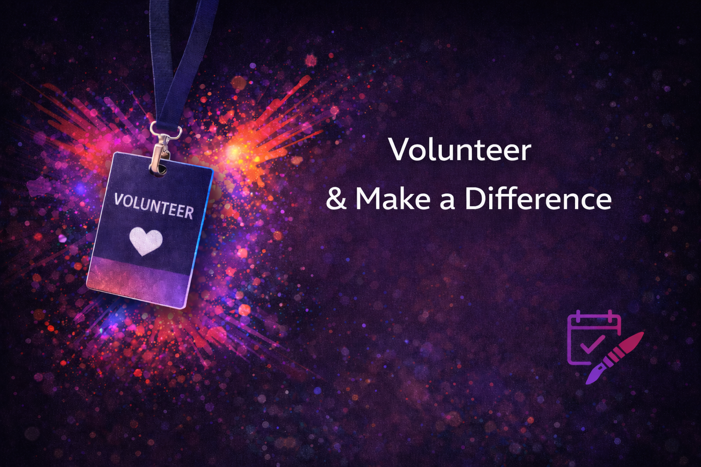
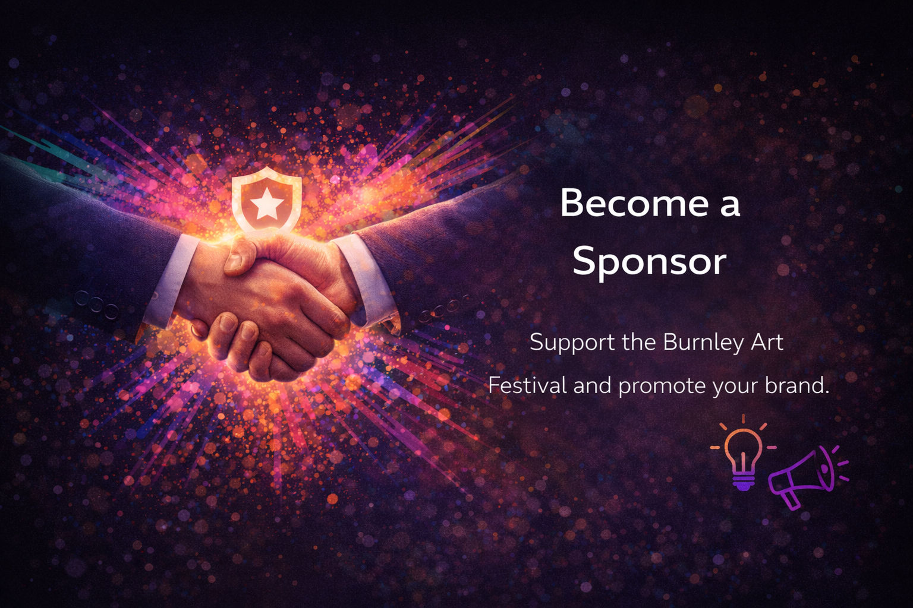

Support the Festival
The Burnley Community Arts Festival is a non-profit organisation dedicated to celebrating and promoting local arts and culture. As a community-driven event, we rely on the generous support of individuals, businesses, and organisations to make this festival possible. Your support helps us continue to provide free and accessible arts experiences for everyone in our community.

Make a Donation
Every contribution, no matter the size, makes a difference. Your donation helps us cover venue costs, artist fees, materials, and ensures the festival remains accessible to all. Donations can be made via bank transfer, cheque, or in person at the festival. All donations are gratefully received and help us continue to bring art to the Burnley community.

Volunteer With Us
We're always looking for enthusiastic volunteers to help make the festival a success. Whether you can help with event setup, visitor assistance, artist support, or promotion, we'd love to hear from you. Volunteering is a great way to get involved in the local arts scene and meet like-minded people. No experience necessary - just a passion for the arts!

Become a Sponsor
Local businesses and organisations can support the festival through sponsorship opportunities. Sponsors receive recognition across our promotional materials, social media, and at the festival itself. Sponsorship packages can be tailored to suit your organisation's needs and budget. Help us celebrate local arts while gaining valuable community visibility.
Other Ways to Support
Even if you can't donate or volunteer, there are many ways to support the festival:
- Attend our events and exhibitions
- Share our festival with friends and family
- Follow us on social media and help spread the word
- Purchase artwork from our featured artists
- Provide in-kind support (materials, services, or expertise)
For more information about supporting the festival, please contact us. We'd be delighted to discuss how you can get involved!